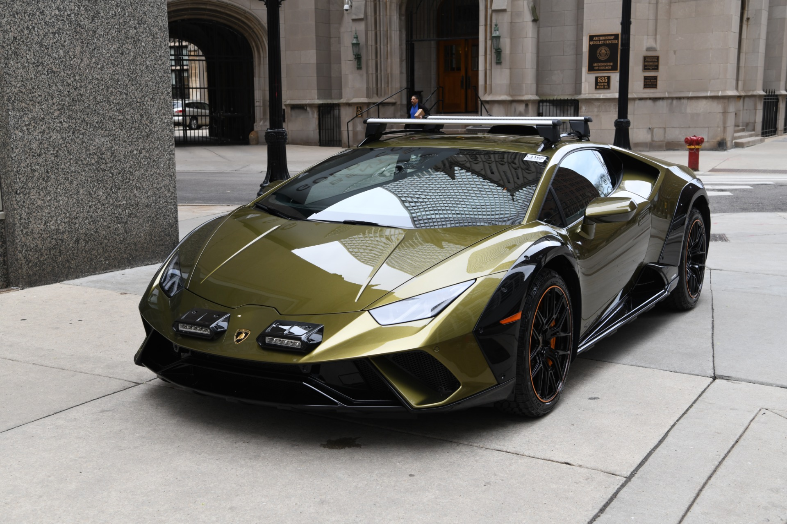
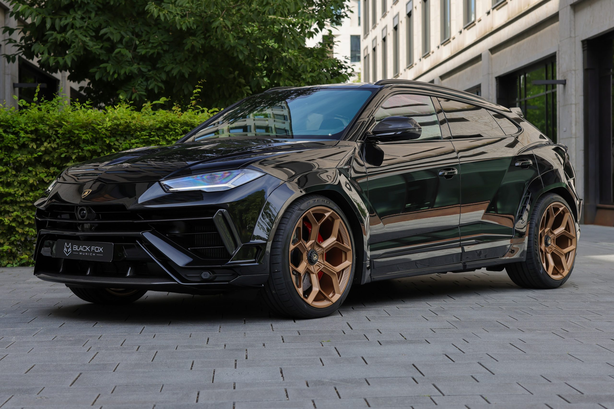
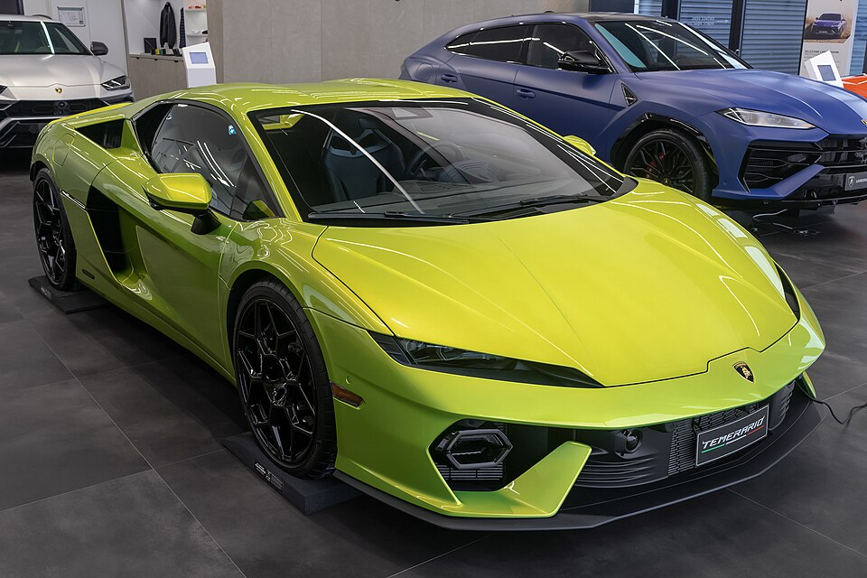
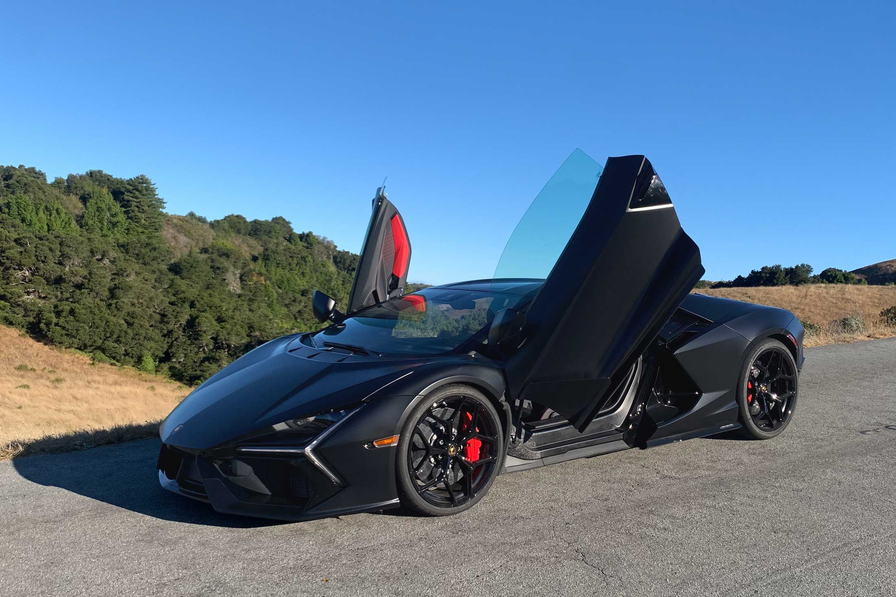

Veltoro
Conoce los modelos de autos disponibles
Lamborguini Huracan
El Huracán Sterrato eleva el placer de conducción a un nuevo nivel. Es el primer superdeportivo diseñado para ir más allá del asfalto. Equipado con una versión adaptada del sistema Lamborghini Dinamica Veicolo Integrata (LDVI), con calibraciones específicas para Strada y Sport, introduce el modo Rally. Como una obra de arte vanguardista, esta inédita interpretación del concepto de superdeportivo es toda una innovación.
Lamborguini Hurus S
El Urus es la encarnación de un concepto visionario a través de la realización de un vehículo utilitario superdeportivo que no renuncia a su ADN Lamborghini. Rendimiento, diseño y exclusividad: Lamborghini Urus S es la evolución natural de Urus con la misma fuerza y una mayor percepción de lujo. El Urus S es el mejor súper SUV para obtener el máximo confort y lujo en cualquier terreno y condición de carretera. Prepárese para experimentar el lujo y el estilo de vida en un SSUV.
Lamborguini Temerario
Lamborghini presenta el Temerario, el primer superdeportivo de la historia de la marca de Sant’Agata Bolognese, equipado con un motor V8 biturbo combinado con tres motores eléctricos que ofrece una potencia máxima total de 920 CV. El segundo vehículo de la gama HPEV (vehículo eléctrico de alto rendimiento) se sitúa en la cumbre del placer de conducción gracias a unas prestaciones y un confort únicos en su categoría. Además, estrena nuevos cánones estilísticos en cuanto a diseño, ofreciendo posibilidades de personalización sin precedentes y contenidos inéditos de conectividad.
Lamborguini Revuelto
Justo antes del 60 aniversario de la marca, Lamborghini presentó el Revuelto, el primer superdeportivo híbrido HPEV (High Performance Electrified Vehicle). Con el Revuelto, Lamborghini ha establecido un nuevo punto de referencia en cuanto a prestaciones, tecnología a bordo y placer de conducción. La emoción que proporciona el Revuelto se alcanza hasta su punto máximo gracias a un tren de potencia que genera 1015 CV en total, combinando la potencia de un flamante motor de combustión interna de 12 cilindros con tres motores eléctricos de alta densidad y un innovador cambio electrónico transversal de doble embrague. El poder de la hibridación se aprovecha para llevar las prestaciones y las emociones al volante a un nivel sin precedentes.